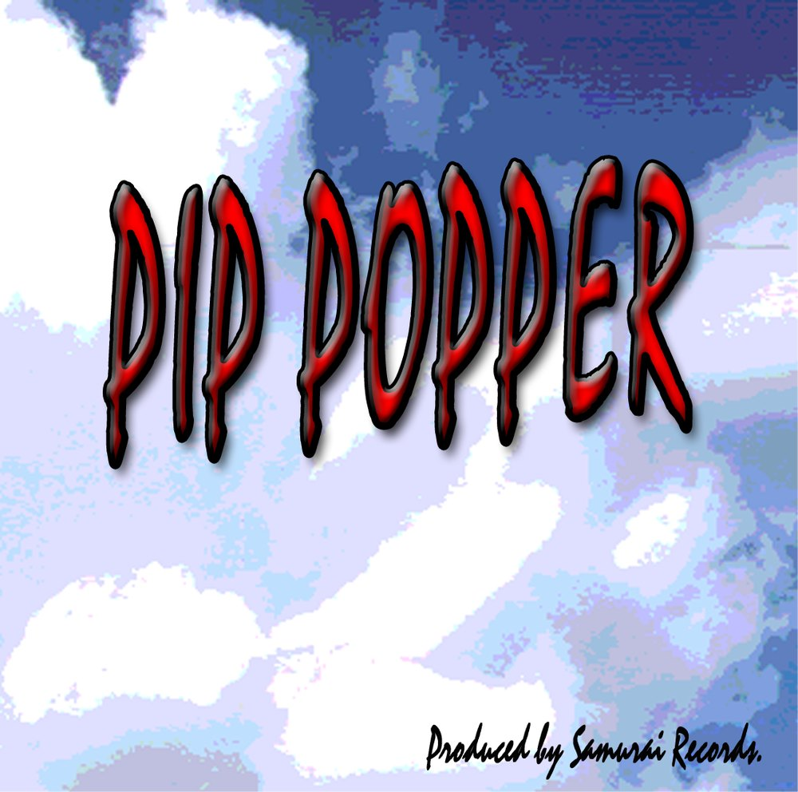
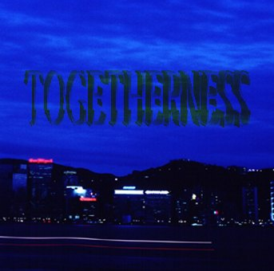
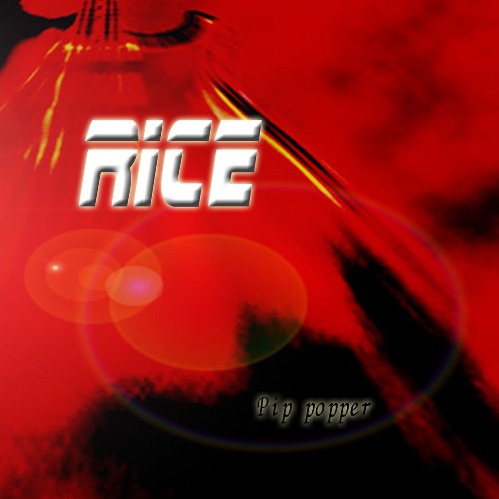
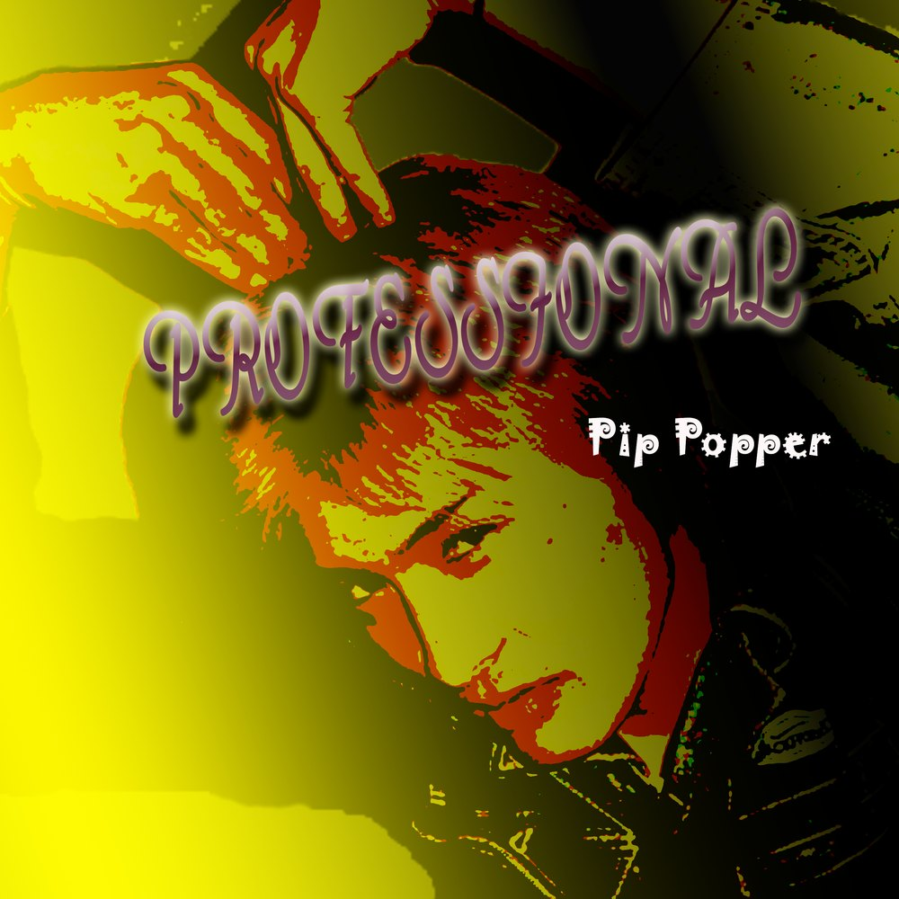

Historyヒストリー
アルバムでたどるPIP POPPER
1999年から2001年へ。仲間と遊びながら作ったアルバムを、当時のCDジャケットと一緒に振り返ります。
-

1st Album
PIP POPPER
- 発表
- 1999年
- 参加メンバー
- HAYATOKAINARI「タンクトップ」に参加
- 収録
- 全11曲
PIP POPPER名義で作った、最初のアルバム。HAYATOとKAIを中心に全11曲を収録し、NARIが「タンクトップ」の1曲に参加しています。
「PIP POP」という呼び名のはじまり
作りたい音楽には、ラップが入っていた。でも、HIP HOPがやりたかったわけではありませんでした。
HIP HOPには敬意がある。だからこそ、自分たちの音楽をHIP HOPと呼ぶのは何か違う気がした。本格的にやっている人たちに怒られたくない、という気持ちも、正直ちょっとありました。
そこで、自分たちが自由に楽しめる新しい呼び名をつけることに。それが「PIP POP（ピップポップ）」です。
収録曲
- DEBUGON WASH
- Mean Behavior
- ZOO
- タンクトップNARI参加
- 少年時代
- コンパ
- プロポーズ
- 愛しのハニー
- 世直し隊
- ナンパ
- PIP POPER
-

NARI Solo Album
TOGETHERNESS
- 参加メンバー
- NARI
- 収録
- 全10曲
1stアルバム『PIP POPPER』の「タンクトップ」に参加したNARIのために制作した、全10曲のソロアルバムです。
NARIは当時、バンドのボーカルとしても活動していました。
NARIのソロ作品のため、PIP POPPER名義のアルバムの番号には数えていません。
収録曲
- Rain of my heart
- Be myself
- Sitsuren
- Kiiroika-ten
- Mirainikimiga
- No more tears
- Believe
- Wakarenoyokan
- Never gonna stop it
- Forever in my heart
-
2nd Album
Don't Complain
- 発表
- 2001年3月1日
- 参加メンバー
- HAYATOKAITATSUORAKKYO
- 収録
- 全10曲
PIP POPPER名義の2ndアルバム。このアルバムから、TATSUOとRAKKYOが加わりました。
新メンバーの加入条件
TATSUOは歌がうまかった。そこでHAYATOが「ふざけるだけでいいから」と誘い、半ば無理やり歌ってもらうことになりました。
RAKKYOは、TATSUOが連れてきた友達。PIP POPPERの曲を聴きたいというので聴かせてみたら、爆笑した。
「俺たちの曲を聴いて爆笑できるなら、歌う資格がある」。そんな理由で、RAKKYOも参加することになりました。
収録曲
- 別世界
- 向上心
- 恋物語
- Humanity
- 売春
- 思い出
- Blood type
- 誕生
- ドラえもん
- HIT MAN
-

3rd Album
RICE
- 発表
- 2001年7月13日
- 中心メンバー
- HAYATOKAITATSUORAKKYO
- 収録
- 全14曲
PIP POPPER名義の3rdアルバム。全14曲を収録しています。
この頃には、PIP POPPERという音楽遊びが仲間たちの間にすっかり浸透していました。みんなで本格的にふざけて曲を作るのが、日常の一部になっていた時期の作品です。
収録曲
- FREE STYLE
- Pip popper ~Short Remix~
- B-Girl
- kiminokareshi
- Dansonjyohi
- Show time
- Diet
- SyusyokukatsudouMUSIC「就職活動」
- O.B
- Doutei
- KARAOKE
- Why I'm Me
- Kyujitsu
- G-MANZ
-
Album
乳バンド ChiChiBand
- 発表
- 2001年9月30日
- 収録
- 全14曲
それまでのシンセサイザーによる打ち込み中心の制作から、生のギターサウンドを取り入れたアルバム。KAIがギターを弾けたので、打ち込みだけでなく本物のギターを入れてみよう、という発想から生まれました。
タイトルの由来
「乳バンド」は、ブラジャーを指す昔の言い方です。
PIP POPPERには下ネタの多い曲があったので、バンドっぽい音楽を作るなら名前は「乳バンド」だろう、ということで決まりました。
収録曲
- NAGISA DE LOVE SONG
- Party Night
- Mr.Children
- Broken Heart
- Jinsei Game
- Free Writter
- Why I'm Me
- INAKAMUSUME
- Bye ByeKin
- Big Old Clock
- Bakeratta
- China
- Police Man
- ChiChiBand
-

Album
PROFESSIONAL
- 発表
- 2001年11月1日
- 収録
- 全4曲
『RICE』の制作が楽しくて、その勢いのままさらに曲を作り、面白くなったので短いアルバムにまとめた作品です。
当時は、既存の商業楽曲の伴奏を使った替え歌やラップ、リミックスなども作っていました。
この作品の音源は、必要な権利の確認ができないため公開していません。
収録曲
- FUN FAN
- KUJYO
- HITMAN (Pip RANBADA Remix)
- Professional
過去の曲は、いまの制作手段で再制作しながら、楽曲一覧で公開しています。
楽曲一覧を見る